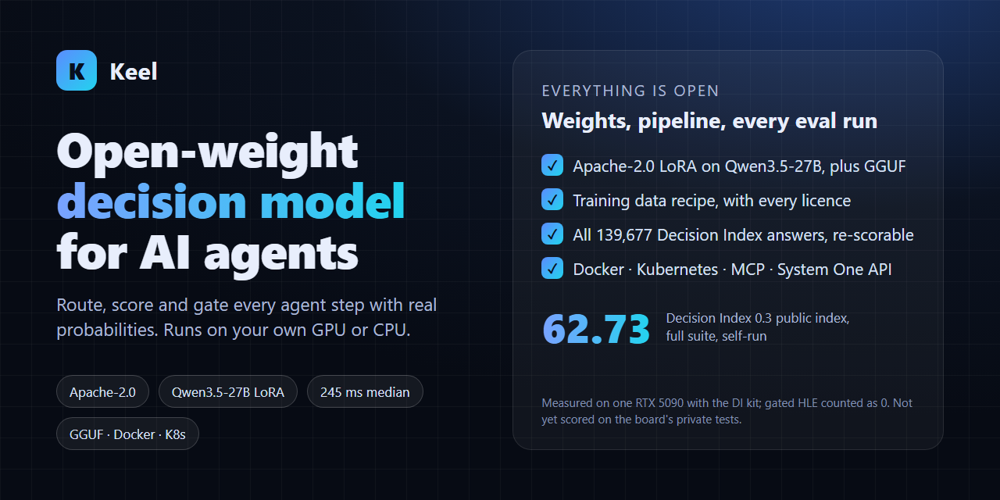

Keel docs / Press kit
Press kit
Everything you need to write about Keel, in one place. All numbers link to the run that produced them.

Image: docs/media/keel-social-card.png (1280 × 640, built from keel-social-card.html). Free to reuse with credit.

In one line#
Keel is an open-weight decision model for AI agents: send text and a typed question (pick one, rate it, yes/no) and get probabilities back, on your own machine.
In 50 words#
Keel answers the small decisions inside AI agents: where to route a ticket, how risky a change is, whether to act or ask. Keel-Lite is a 13M-parameter model that answers on a CPU in milliseconds. Keel-Pro, a Qwen3.5-27B LoRA, scores 62.73 on the Decision Index public suite. Both are Apache-2.0.
Key facts#
| Keel-Lite | Keel-Pro | |
|---|---|---|
| What | CPU decision model (ONNX) | GPU decision model (LoRA on Qwen3.5-27B) |
| Size | 13M parameters, 17.7 MB | 27B base + 217.6M trained, 0.81 GB adapter |
| Runs on | Any CPU | One NVIDIA GPU (~21 GB in 4-bit; Q4 GGUF is a 16.8 GB file) |
| Speed | ~15 ms per request | 245 ms median per request (RTX 5090) |
| Decision Index 0.3, public | not built for it | 62.73, full public suite, 139,677 requests |
| Licence | Apache-2.0 | Apache-2.0 |
| API | System One wire (Jev- and MSD1-compatible) | Same, model decider-pro-1.0.0 |
How to describe the result (accurately)#
| Say | Avoid |
|---|---|
| "On par with TypeSafe Jev 1.14 on the Decision Index public suite" | Any comparison with Microsoft-Decision-1 (it is not on the Decision Index; Microsoft reports a different, undisclosed suite) |
| "Measured on the full public suite, self-reported, HLE counted as 0" | "Official leaderboard score" or a board rank (not submitted; the board ranks on private tests) |
| "An open-weight 27B LoRA with an open training pipeline" | "State of the art" or "top of the board" (about 98 entries score higher on the public index) |
| "Trained on train splits of public datasets, in DI's format" | "Blind to the benchmark" |
Keel-Pro's case is openness, not rank: Apache-2.0 weights, the full training and eval pipeline, every eval run, and deployment recipes (Docker, Kubernetes, GGUF, MCP). The best open entries on the board score 73–75.
Links#
| Code | https://github.com/sivamatic/Keel |
| Weights | https://huggingface.co/neerumsr/keel-pro (adapter) · https://huggingface.co/neerumsr/keel-pro-GGUF (llama.cpp) |
| The full story, with diagrams | Keel-Pro story |
| Every eval run | di-results.md |
| Benchmark | Decision Index by apolinario |
| Base model | Qwen/Qwen3.5-27B by the Qwen team |
Credits#
Keel-Pro stands on open work: the Qwen team's Qwen3.5 base model, Hugging Face transformers, PEFT and bitsandbytes, llama.cpp for GGUF, and the Decision Index by apolinario for an open, reproducible benchmark. TypeSafe (Jev) and Microsoft (Microsoft-Decision-1) defined the System One wire format that Keel speaks.
Cite#
See CITATION.cff, or use the BibTeX in the README.
Contact#
Open a GitHub Discussion or issue. Security reports: SECURITY.md.